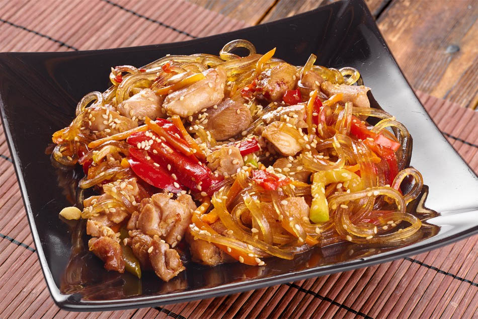

Фунчоза

Описание
Фунчоза - блюдо азиатской кухни из так называемой стеклянной лапши
овощей и соевого соуса. К фунчозе подходит любое мясо. Но здесь
будет курица. И это моё самое любимое блюдо.
Ингредиенты
- Фунчоза - 150 г
- Перец болгарский красный - 1-2 шт.
- Лук репчатый - 1-2 шт.
- Морковь свежая (крупная) - 1 шт.
- Соус соевый Kikkoman - по вкусу
- Соль - по вкусу
- Масло растительное - для обжарки
- Кунжут - для украшения
- Курица - 150 г
Шаги приготовления
-
Нарежьте овощи симпатичными брусочками. Для своего удобства
морковь я измельчила с помощью овощетерки.
- Подлейте немного фунчозы на сковородку
- Обжарьте курицу до почти готового состояния.
- Подлейте немного фунчозы
-
На хорошо разогретой сковороде обжарьте морковь, лук и перец на
растительном масле в течение 10 минут.
- Приготовьте фунчозу по инструкции, указанной на упаковке.
-
Как только фунчоза будет готова, слейте воду и добавьте
обжаренные на сковороде овощи и курицу. Фунчозу заправьте соевым
соусом по вашему вкусу. Для более аппетитного вида я добавляю
небольшую горсть кунжута.
-
Фунчоза готова! Фунчозу можно подавать как в горячем так и в
холодном виде. Всем приятного аппетита и хорошего настроения!